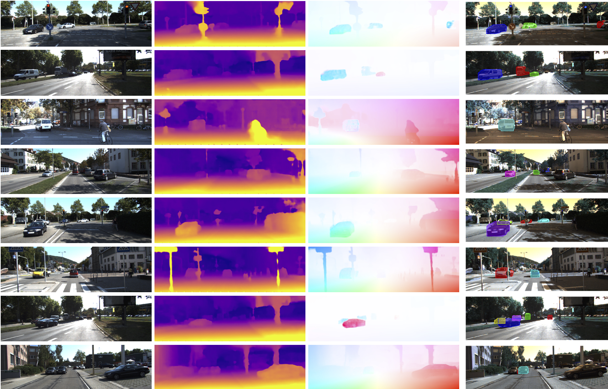

Trained with raw stereo motion sequences in a self-supervised manner, our model learns to predict object motion (speed and moving direction) together with the scene depth using sequence of stereo images and object proposals as input.
We present a system for learning motion maps of independently moving objects from stereo videos. The only annotations used in our system are 2D object bounding boxes which introduce the notion of objects in our system. Unlike prior learning based approaches which have focused on predicting dense optical flow fields and/or depth maps for images, we propose to predict instance specific 3D scene flow maps and instance masks from which we derive a factored 3D motion map for each object instance. Our network takes the 3D geometry of the problem into account which allows it to correlate the input images and distinguish moving objects from static ones. We present experiments evaluating the accuracy of our 3D flow vectors, as well as depth maps and projected 2D optical flow where our jointly learned system outperforms earlier approaches trained for each task independently.
Results

Qualitative results of our method. From left to right, reference image, depth, optical flow and instance-level moving object mask.